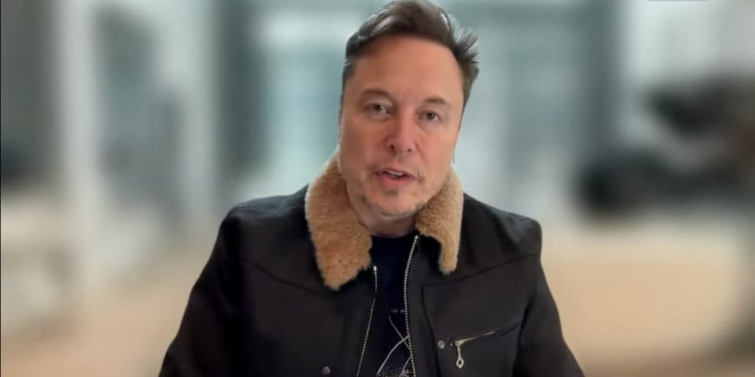

世界苦茶05月21日新闻 | 45条 | 欧洲对以色列计划越来越难以接受

欧洲对以色列计划越来越难以接受 | 赖清德执政一周年回应内外困境 | 菲律宾大选后小马科斯愿与杜特尔特和解 | 马斯克续任特斯拉CEO | 美国尚在继续支持乌克兰
AI实验项目
苦茶数据
美元兑人民币：7.21（昨日7.21，前日7.21）
美元兑日元：144.07（昨日144.13，前日145.32）
上证指数：3386（昨日3380，前日3364）
标普500指数：5940（昨日5963，前日5958）
比特币：106341（昨日105022，前日103111）
布伦特原油：66.46（昨日65.01，前日65.13）
中国新闻
• 大陆批赖清德两面手法 ：针对台湾总统赖清德对两岸关系的论述，中国大陆国务院台办发言人陈斌华回应称，认同两岸同属一个中国，两岸协商对话才有基础；并批评赖清德使用两面手法，“枉费心机、注定失败”。根据“国务院台办”微信公众号星期二发布的消息，陈斌华以发言人答问的形式说，赖清德近日讲话仍然坚持“台独”分裂立场和“倚外谋独”、“以武谋独”路线，渲染“大陆威胁”，延续“民主对抗威权”虚假叙事，挑动两岸对立对抗，推动两岸经济脱钩断链，推进“17项因应策略”，阻挠限制两岸交流合作。陈斌华又说，赖清德宣称愿在“对等尊严”前提下，与大陆进行交流合作，企图在“新两国论”基础上恢复两岸协商对话，“这种两面手法了无新意，枉费心机，注定失败”。
• 李家超谈国安拍照 ：港府将国安公署履职场所列为禁地，香港特首李家超说，只要没有不良意图、不影响公务，民众可正常拍照留念。综合《明报》和《星岛日报》报道，李家超星期二出席行政会议前，被问及传媒或市民是否可以拍摄国安公署办公地点。他回答说，只要没有不良意图，仅仅拍摄留念，是可以的，但若影响到公署执行职务，就会依法处理。
• 节约令强调国产车 ：中国官方修订《党政机关厉行节约反对浪费条例》，当中明确要求公务用车应当选用国产汽车，优先选用新能源汽车，并实行政府集中采购，降低运行成本。新华社星期天发布消息，中国国务院印发修订版《党政机关厉行节约反对浪费条例》，并发出通知，要求各地区各部门认真遵照执行。《条例》共有11章、63条内容，涉及政府机关经费管理、因公临时出国（境）、公务接待、公务用车、资源节约等规定。
• 习近平调研河南 ：中共总书记习近平在河南考察时说，高质量发展是中国式现代化的必然要求，强调要以高质量发展的确定性应对各种不确定性。据新华社报道，习近平5月19日至20日在河南省委书记刘宁和省长王凯陪同下，先后到洛阳、郑州考察调研。中国副总理何立峰也陪同考察。习近平5月19日下午在洛阳轴承集团考察时向职工说，制造业是国民经济的重要支柱，推进中国式现代化必须保持制造业优势合理比重。
• 习近平强调制造业 ：中共总书记习近平星期一在河南考察时，强调要继续把制造业搞好，才能够真正实现中国式现代化。据中国央视新闻报道，习近平当天下午来到河南洛阳轴承集团股份有限公司考察，走进企业智能工厂，了解各种类型轴承产品的性能和用途，察看智能生产线，并同企业职工亲切交谈。习近平说，中国坚持发展实业，从过去洋火、洋皂、洋铁等靠买进来，到现在成为工业门类最齐全的世界制造业第一大国，这条路走对了。中国要继续把制造业搞好，坚持自立自强，掌握关键核心技术，推进产学研一体化，培养大批高素质人才，这样中国式现代化才能够真正实现。
• 川大聘日学者引争议 ：中国四川大学因宣布聘请一位著名的日本考古学家，受到网民批评。据报，该大学已经从网站上删除了有关聘用通知。据澎湃新闻5月7日报道，四川大学历史文化学院发文宣布，著名考古学家、美国人文与科学院院士宫本一夫全职引进为四川大学文科讲席教授。报道称，四川大学历史文化学院介绍，2021年起，宫本一夫已在学院担任讲座教授，多次开设专题课。目前，宫本一夫已至学院正式开展工作，他将在学院及考古科学中心继续东亚考古、欧亚草原及中西文化交流的综合研究，开设相关课程，并在国际化平台建设及跨学科人才培养等方面持续助力学院发展。
• 王毅将出席调解公约 ：中国外长王毅将在下星期五南下香港，出席《关于建立国际调解院的公约》签署仪式。中国外交部星期二（20日）在官网宣布上述讯息。中国外交部发言人毛宁在星期二例行记者会上进一步介绍，来自亚洲、非洲、拉丁美洲和欧洲的近60个国家和联合国等约20个国际组织，将派高级别代表出席签署仪式。
• 钟南山谈新冠态势 ：中国的冠病病例再次增多，中国工程院院士钟南山说，对于这波疫情，民众要重视，但不用恐慌。据《广州日报》报道，钟南山星期一说，冠病阳性率上升趋势不仅在中国显现，其他国家和地区也面临同样情况。总体而言，冠病已逐渐成为阶段性流行的呼吸道疾病。他说，对于65岁以上或有基础病的高危人群，一旦确诊，应及早用药干预，避免进展成重症。
• 韩国阻止 SK 海力士 HBM 技术泄露至中国： 5月9日，韩国当局在仁川国际机场逮捕了正准备登机飞往中国的嫌疑人金某，其涉嫌试图将SK海力士专有的高带宽存储器(HBM)封装技术走私到中国。金某受雇于一家为SK海力士供应精密材料的分包商，他在2025年初辞职后不久，窃取了与HBM封装工艺相关的关键数据，尤其是混合键合技术。这种下一代互连技术，可通过最小化芯片尺寸来提高带宽和能效。金某打印文件并拍摄内部系统中的机密文件，然后通过移除SK海力士的标识和“机密”标记来掩盖违规行为。金某收集了超过1.1万张内部文件图片，其中一些被引用于提交给至少两家中国公司的简历中，其中包括华为的芯片制造部门海思半导体。当局正在调查数据是否已被转移给中国公司，或者是否有其他个人参与。
亚太印太新闻
• 赖清德否认反攻大陆 ：台湾总统赖清德在就职周年前接受日本媒体访问时说，台湾没有要反攻中国大陆，并期望美国、日本等共同阻止中国大陆发动战争。台湾总统府官网星期二发布赖清德接受日本电视台及读卖电视台专访内容。《联合报》报道，日本电视台星期一晚间播出预录的赖清德专访。赖清德指中国大陆企图取代美国，改变全球以规则为基础的世界秩序，并吞台湾只不过是第一步。“因此当中国的军力越来越强盛的时候，自然而然国际社会就会有人担心两岸会不会爆发冲突。”
• 赖清德重申和平愿景 ：台湾总统赖清德在就职满一周年的记者会上表示，他坚定地追求和平，因为和平无价，战争没有赢家。他同时重申，只要对等尊严，台湾很乐意跟中国大陆进行交流合作。赖清德星期二就职满一周年，他上午在台北召开记者会。被日本媒体问及两岸关系的问题时，赖清德回应，台湾社会与人为善，并表示他也是坚定地追求和平，“因为和平无价，战争没有赢家”。赖清德进一步说，对和平追求固然有理想，但不能有幻想，所以他坚定地提出和平四大支柱行动方案，“过去一年如此，未来也是如此”。
• 小马可斯愿与杜特尔特和解 ：菲律宾总统小马可斯星期一在社交媒体平台的播客中表示，愿意与前总统杜特尔特家族和解。新华社报道，小马可斯在播客中说，自己“需要朋友，而不是敌人”，希望政局稳定，从而实现政治议程。他说，即便政见有分歧，自己对和解依然持开放态度。2022年，小马可斯和杜特尔特的女儿莎拉搭档竞选菲律宾正副总统，取得压倒性胜利，但双方关系后来急剧恶化。莎拉今年2月被众议院弹劾，新一届参议院将在今年7月对她的弹劾案进行表决。今年3月，杜特尔特在马尼拉国际机场被捕，目前羁押在荷兰海牙的国际刑事法院。
• 泰国疫情病例激增 ：泰国疾病控制与预防中心称，上周泰国的冠病病例上升至3万3030起，其中曼谷通报病例6000多起。该部门通报称，5月11日至17日通报的病例数是前一周通报的两倍多。
• 赖清德提国安简报 ：台湾总统赖清德星期二说，将指示国安团队着手规划，向在野党主席进行重要国安情势简报。国民党主席朱立伦回应，全民期待是由赖清德亲自召集国安简报，并称政府对于国安议题，更应建立国安跨党机制，以因应变局。赖清德星期二在就职周年上发表讲话时说，他将指示国安团队着手规划，向在野党主席进行重要国安情势简报，期望朝野政党领袖，无论政治立场为何，都能够以台湾利益为优先，以守护台湾安全为前提，在相同的事实基础上，坦率真诚交换意见、共商国是，携手面对各项挑战。朱立伦在脸书发文回应，全民期待是由赖清德亲自召集国安简报，内容应包括国防安全、经济安全、能源安全、社会安全、科技安全、环境安全等安全议题，并进行朝野对话。
• 赖清德促朝野对话 ：台湾总统赖清德在执政一周年纪念日强调，始终愿意张开双手，努力促成朝野对话，加强政党合作，并宣布将向在野党主席进行重要国安情势简报。赖清德星期二在台湾总统府敞厅发表520谈话时说：“我将指示国安团队着手规划，向在野党主席进行‘重要国安情势简报’，期望朝野政党领袖，无论政治立场为何，我们都能够以国家利益为优先，以守护国家安全为前提，在相同的事实基础上，坦率真诚交换意见、共商国是，携手面对国家的各项挑战。”赖清德也提出，民主的纷争，要用更大的民主来解决。“过去一年，面对国内的政治局势，我们透过朝野政党，共组祝贺美国总统就职代表团，展现民主台湾团结一致，共同深化台美关系；我也依照宪法赋予总统的职权，开启五院国政会商，希望达成和解、促进合作。”
• 韩记者造谣涉华被捕 ：韩国一名网媒记者称“戒严军与美军抓获99名中国间谍”，被提请检方审查批捕。据韩联社报道，韩国警方星期二针对曾报道不实涉华消息的一名网媒记者提请检方审查批捕。首尔警察厅网络侦查队表示，以妨害公务罪名针对网媒SkyeDaily的记者A某提请审查批捕。
• 韩总统选举聚焦修宪 ：随着韩国总统选举临近，修宪议题持续升温，成为本届选战的焦点之一。最大在野党共同民主党候选人李在明与执政党国民力量党候选人金文洙围绕总统任期展开激烈交锋，互批对方别有用心。李在明主张废除现行的总统五年单任制，改为四年连任制，允许总统最多连任一次、连续执政八年。他称，这将有助提高政策连贯性和行政效率，是应对国家治理挑战的必要改革。金文洙则主张相同的四年任期，并支持连任，但他认为第二任期不该只限连任，即一人最多可担任两届总统，无论是否连续。这一差异成为双方攻防的关键。
科技新闻
• 马斯克续任特斯拉CEO ：美国电动车公司特斯拉执行长马斯克说，未来五年他将继续担任特斯拉首席执行官，缓解了一些投资者对其无法专注经营特斯拉的担忧。现年53岁的马斯克星期二以远程方式出席在多哈举行的卡塔尔经济论坛。特拉华州衡平法院一位法官两次裁定2018年特斯拉授予马斯克的巨额薪酬方案无效，马斯克对这位法官的裁决提出批评，但他不认为这一争议会影响继续留任的决定。“这份薪酬与非凡的成就是匹配的，”马斯克说。“我相信，无论某位打着法官名义的激进分子在特拉华做出什么决定，都不会影响未来的薪酬安排。”
• 浙江支持AI产业 ：中国浙江省印发《支持人工智能创新发展若干措施》，将智能家居机器人、智能眼镜等产品纳入消费品以旧换新补贴范围。据浙江省政府网站，浙江省人民政府5月16日印发《关于支持人工智能创新发展若干措施》的通知，提出打造万亿产业生态目标，并部署27条具体措施。措施明确，到2027年，浙江省的通用人工智能核心技术和产业应用全国领先，培育若干具有全球竞争力和影响力的人工智能企业，全省规模以上人工智能核心产业营业收入超1万亿元人民币。
• 全球首例膀胱移植 ：美国加利福尼亚大学洛杉矶分校的外科团队成功完成全球首例人类膀胱移植手术，突破了因骨盆血管结构复杂而长期被视为无法实施的技术障碍。这项医学突破不仅填补泌尿外科空白，也为重度膀胱疾病患者带来新的治疗希望。洛杉矶罗纳德·里根医疗中心日前宣布，院方于5月4日为41岁的拉雷因萨尔同时移植膀胱与肾脏，手术历时八小时。拉雷因萨尔数年前因罕见膀胱癌切除了大部分膀胱，后又因癌症与终末期肾病摘除双肾，长期依赖透析维生。
• 女性工作AI影响更大 ：联合国国际劳工组织本周二发布的一份报告显示，传统上由女性从事的工作比男性工作更易受到人工智能影响，尤其是在高收入国家。报告发现，随着人工智能越来越多地承担行政任务并改变秘书等文书工作，9.6%的传统女性岗位面临转型，而男性岗位这一比例为3.5%。报告指出，许多任务仍需要人类参与，相关职位更可能发生根本性改变而非完全消失。随着生成式人工智能不断拓展学习能力，媒体、软件和金融相关职位也处于变革前沿。报告称：“ 这种‘暴露’并不意味着整个职业立即实现自动化，而是指当前任务中有很大比例可能通过该技术完成。”
财经新闻
• 泰国推千亿刺激计划 ：泰国内阁批准了一项预算为1570亿泰铢的经济刺激计划，将重点推动社区经济、旅游业的发展，加强农业和基础设施建设。泰国财政部根据星期一经济刺激政策委员会会议的决定提出这项计划。泰国首相府发言人集拉育星期二介绍，计划涵盖水利建设、交通运输基础设施建设、旅游业发展、促进产品出口和提高生产效率、发展社区经济等。
• 日本重申反美关税 ：日本首席贸易谈判代表赤泽亮正说，日本政府要求美国政府取消关税的立场没有改变。路透社报道，赤泽亮正在星期二的例行新闻发布会说，日本不会仓促达成一项可能损害国家利益的贸易协议。他说：“美国祭出一系列针对汽车、汽车零部件、钢铁和铝的关税以及对等关税措施，是令人遗憾的。而我们要求美国重新考虑其关税立场没有改变。”
• 中国对美手机出口下滑 ：中国向美国发运苹果公司的iPhone手机和其他移动设备的数量，今年4月份下降至2011年以来的最低水平，这凸显出美国的关税威胁对世界两大经济体之间大宗商品流通的扼杀效果。彭博社引述星期二的海关数据说，上个月智能手机对美出口下滑72%，至略低于7亿美元，远超中国对美国整体出口下滑21%的幅度。
• 台将设主权基金 ：台湾将成立主权基金，总统赖清德表示，该规划是基于国际经济战略的布局，要因应整个国际经济情势的变化。综合《联合报》和中时新闻网报道，赖清德星期二就职满一周年，他上午在总统府发表讲话时说，未来政府将成立推升台湾经济发展动能的基金。对外，要放眼全球，投资国际市场，政府将成立主权基金，充分运用台湾产业的优势，由政府主导，协同民间企业的力量，布局全球，连结人工智能时代的主要目标市场。赖清德说，对内，要深耕在地供应链，强化产业因应变局的能力，政府将提升国发基金功能，达到产业再造的目标，协助台湾产业及中小企业转型升级，提升产业国际竞争力，巩固台湾产业的根基。
• 韩美关税磋商展开 ：韩国政府代表团将于星期二至星期四在美国华盛顿与美国贸易代表办公室就“对等关税”和钢铁、汽车、半导体等重点品类的关税减免问题进行第二次“技术性磋商”。韩联社报道，韩国产业通商资源部20日说，韩美双方将围绕贸易平衡、非关税壁垒、经济安全、数码贸易、原产地规则和商业考量六个核心领域进行讨论。由于磋商议题涉及的范围比较广，除产业部官员外，韩方代表团成员还包括来自企划财政部、农林畜产食品部、海洋水产部等多个部门的官员。
• 美元汇率全面下跌 ：由于美国主权信用评级遭下调和贸易紧张风险持续打击市场对美国经济的信心，美元对一揽子货币汇率星期一全面走低。衡量美元对六种主要货币汇率的美元指数19日下跌0.66%，在汇市尾市收于100.426。新华社报道，国际信用评级机构穆迪公司5月16日宣布，由于美国政府债务及利息支出增加，该机构决定将美国主权信用评级从Aaa下调至Aa1，同时将其评级展望从“负面”调整为“稳定”。
• 日制铁计划美投资 ：根据路透社看到的一份文件和三名知情人士，日本制铁公司计划向美国钢铁公司运营投资140亿美元，其中包括在特朗普政府批准日本制铁收购这家标志性美国公司的情况下，斥资40亿美元在美国建造一座新钢铁厂。根据文件中包含的计划细节，到2028年，日本制铁将向美国钢铁公司的基础设施投入110亿美元，其中包括10亿美元用于一项绿地投资，且预计未来几年增加到30亿美元。美国媒体CTFN此前报道过日本制铁的总投资额。路透社报道有关消息后，美钢的股价收盘上涨超过3%。
• 通用停止出口至中国 ：美国通用汽车上星期通知员工和中国出口业务经销商，公司将停止从美国向中国出口汽车。据路透社报道，通用汽车发言人说，公司通过旗下的道朗格高端进口业务，从美国向中国出口汽车，但这部分不到公司在华销量的0.1%。发言人在声明中说：“由于经济形势发生重大变化，我们决定重组道朗格，并相应地优化通用汽车中国的业务。”
• 国有大行集体降息 ：中国多家国有银行星期二下调存款利率。综合澎湃新闻和路透社报道，工商银行、农业银行、中国银行、建设银行、招商银行等星期二在其官方应用程序或网站调整了人民币存款利率表。其中，活期存款下调0.05个百分点至0.05%，各期限定期存款挂牌利率下调0.15至0.25个百分点。具体来说，三个月、六个月、一年期、二年期定期存款挂牌利率均下调15个基点至0.65%、0.85%、0.95%和1.05%，三年期和五年期定期存款挂牌利率均下调25个基点至1.25%和1.30%，调整前上述期限定期存款挂牌利率分别为0.8%、1.00%、1.10%、1.20%、1.50%和1.55%。 （翻評：基本就是存款利率下調，存款用戶幫銀行維持息差。）
• 本田今日宣布大幅削减纯电动汽车投资： 本田公司于20日宣布，将调整纯电动汽车战略。原计划到2030年度投资10万亿日元用于纯电动汽车和软件开发，此次表示要大幅减少 3 成，降至 7 万亿日元。本田认为，纯电动汽车的普及比预期要慢，巨额投资存在风险。本田的社长三部敏宏表示，将修正截至2030年的纯电动汽车在汽车销量中所占的比例，预计从此前的 40%调整到 30%以下。本田原本提出了2030年销量超过 200万辆的目标，此次大幅缩减至70~75万辆规模。计划在加拿大建设的纯电动汽车和电池工厂将推迟2年。原计划投资150亿加元，于2028年投入运营，此次表示推迟到2030年以后。是否重启投资，将根据两年后的情况做出决定。
• 欧盟将对低价进口商品征收两欧元关税： 欧盟计划对进入欧盟的数十亿欧元小包裹征收 2 欧元的固定费用，这些包裹主要来自中国，这对 Temu 和 Shein 等跨境电商来说是新的打击。贸易专员谢夫乔维奇向欧洲议会表示，他已于周二提议征收手续费，以应对每年直接进口到民众家中的46亿件商品所带来的挑战。欧盟委员会提案草案指出，两欧元的费用将适用于直接销售商品，而运送仓库的商品则按0.50欧元征税。部分由此产生的收入将用于支付额外海关检查费用，其余资金将纳入欧盟预算。谢夫乔维奇表示，包裹激增导致危险和不合规商品增加，并且引发了欧盟零售商对不公平竞争的投诉。 （翻評：Temu和Shein在歐美市場都遭遇挫折。）
• 印尼上万网约车司机骑士集会 抗议收入低： 印度尼西亚成千上万网约车及外卖平台司机和骑士罢工集会，抗议印尼最大的网约车平台GoTo与新加坡平台Grab合并，并抗议收入太低和要求下调平台抽成比率。约25,000名司机和骑士星期二在多个城市集会。此次抗议活动涉及多个平台的司机和骑手。抗议者称，每天工作10至12个小时，却只赚取10万至15万印尼盾。他们也担心GoTo和Grab的合并会导致市场垄断，可能抑制司机和骑手的收入。
俄乌战争
• 欧英新制裁俄 ：欧盟和英国5月20日宣布对俄罗斯实施新的制裁措施。新的制裁重点针对帮助俄罗斯运输石油规避制裁的“影子舰队”船只。在特朗普与普京的通话后，欧洲官员对俄罗斯的意图持怀疑态度。德国外长表示，俄罗斯尚未采取无条件立即停火这一决定性步骤，因此不得不对此作出反应。乌克兰总统泽连斯基表示，俄罗斯正试图争取时间来继续战争和占领。乌克兰正与盟友合作，向俄罗斯施加压力从而改变他们的行为。俄罗斯外交部发言人表示，俄罗斯不会屈服于所谓的最后通牒。俄罗斯已准备好同乌克兰就未来的和平协议达成备忘录，现在需要乌克兰采取行动。
• 俄罗斯将人口数据列为机密，出生率跌至200年来最低水平： 据俄罗斯著名人口学家指出，俄罗斯的出生率骤降至18世纪末或19世纪初以来的最低水平，当局因此将关键的人口统计数据列为机密。根据5月16日发布的月度报告，俄罗斯联邦国家统计局未公布最近一期的出生与死亡数据，以及每月的结婚与离婚数据。人口学家拉克沙指出，在此前发布的五张人口统计表中，最新报告中只剩下一张，并且仅提供从年初至今的累计数据，而非月度明细。他表示：“事实上，自2025年3月以来，俄罗斯几乎再无任何可公开获取的人口统计数据。”“政府内部对人口危机的恐慌程度已达到史诗级别，”他补充说。 （翻評：俄羅斯治理中國化。）
• 泽连斯基透露与特朗普通话细节，谈及普京电话前后情况： 乌克兰总统泽连斯基在与特朗普进行两次通话后向媒体介绍情况。他表示，第二次通话是在特朗普与普京交谈之后进行的，通话中还包括欧盟委员会主席冯德莱恩、法国总统马克龙、意大利总理梅洛尼、德国总理梅尔茨以及芬兰总统斯图布。泽连斯基指出，美、俄及多国团队正在筹备一次高级别会议，可能会在土耳其、梵蒂冈或瑞士举行。在首次通话中，泽连斯基讨论了停火问题，并称如果俄罗斯违反停火协议，美国愿意实施制裁。他明确表示，乌克兰不会从本国领土撤军，也不会接受克里姆林宫的最后通牒。“这是我的宪法责任，也是我们军队的职责，”他说。“如果俄罗斯要求我们从本国撤军，那就说明它根本不想实现和平——因为它知道这永远不可能发生。”他称现在是一个决定性的时刻，全世界必须表明各国领导人是否真的有能力终结战争、实现持久和平。泽连斯基向特朗普表示，乌克兰愿意实现全面且无条件的停火，但强调这一提议不能被削弱：“如果俄罗斯不准备停止杀戮，就必须施加更严厉的制裁。向俄罗斯施压将推动它走向真正的和平——这是全世界都明白的。”他强调要确认俄罗斯是否真正愿意进行有意义的谈判，并表示他与欧洲领导人讨论了下一步，包括谈判代表之间的会晤，以及对双方提案的公正评估。泽连斯基指出，每一项提案都值得认真对待，因此美欧代表必须在适当层级参与谈判。“对我们所有人来说，最重要的是美国不能在谈判中保持距离，”他说。“因为唯一从中受益的人是普京。我感谢所有支持这种做法的人。”“如果俄罗斯拒绝停止杀戮，拒绝释放战俘和人质，如果普京提出不切实际的要求，这将意味着俄罗斯在继续拖延战争，欧洲、美国和世界应做出相应反应，包括进一步制裁。俄罗斯必须结束它发动的战争，而它随时可以这样做。乌克兰始终准备好实现和平，”他总结说。
• 62%的美国人支持继续对乌克兰提供军事援助： 有62%的美国选民认为特朗普政府应继续向乌克兰提供武器，并对俄罗斯实施制裁。其中，71%的民主党支持者和59%的共和党支持者持这一观点。此外，64%的美国人认为，如果乌克兰愿意作出某些让步以结束战争，美国应向其提供直接的安全保障。这一观点得到了各党派选民的广泛支持。
• 美国正与盟国协调向乌克兰提供新一批“爱国者”导弹系统： 在回应民主党参议员珍妮·沙欣的提问时，共和党参议员卢比奥强调，除了一周的暂停外，美国并未中断对乌克兰已批准援助的交付。然而，新一轮援助计划则是另一回事，他指出：“白宫需要决定是否向国会申请额外拨款。但一切已经获得批准的、由国会拨款的援助仍在继续进行。”他说，并非所有乌克兰的请求都可以满足。他特别提到乌克兰希望获得“爱国者”导弹系统，“但坦率地说，我们自己也没有库存。”“不过我们正在与北约盟国密切合作——有些北约国家拥有可以提供给乌克兰的‘爱国者’导弹电池，比如用于保卫基辅等地的空域。我们一直在积极推动这方面的协调。”
其他新闻
• 加沙危机英法加施压 ：加沙人道主义危机加剧，英法加施压以色列。联合国人道主义事务协调厅5月20日表示，19日有9辆援助卡车获准进入加沙，但只有5辆车进入且仍在以色列的控制之下。此前联合国称，它已获准向加沙派遣约100辆援助卡车。如果援助物资无法抵达，未来48小时内可能会有14000名婴儿死亡。英国、法国和加拿大领导人19日发表联合声明，要求以色列停止新一轮军事攻势并取消对人道主义援助的限制，否则将采取进一步具体行动。他们同时呼吁哈马斯释放被扣押人质。
• 欧盟解除叙制裁 ：驻布鲁塞尔的欧洲联盟成员大使批准解除对叙利亚的所有经济制裁，以帮助这个饱受战争蹂躏的国家在巴沙尔·阿萨德倒台后恢复元气。欧盟27个成员国的大使星期二就此达成初步协议，该协议内容将于稍后在布鲁塞尔举行的外交部长会议上正式公布。法新社报道，欧盟是在美国总统特朗普上周宣布华盛顿将解除对叙利亚的制裁之后，作此决定。
• 以空袭致50人死亡 ：加沙地带卫生部门称，以色列星期二的空袭造成至少50个巴勒斯坦人死亡。尽管国际社会不断施压，要求以色列停止袭击，并允许援助物资进入加沙，但以色列仍继续轰炸加沙。据加沙医务人员称，袭击针对的是两所房屋以及一所收容流离失所家庭的学校等地区。以色列军方星期一要加沙南部城市汗尤尼斯的居民撤离至海岸，避开“前所未有的袭击”。目前，以色列军方尚未对此发表评论。 （翻評：以色列基本已經敗光了所有的反制合法性。全面吞併加沙的計劃和最近的空襲完全不成比例，但可惜國際社會的各個國家未能對以色列施加足夠的限制，甚至各個主要國家都對以色列缺乏有力制裁。）
• 新加坡呼吁停火援助 ：新加坡呼吁全面恢复给予加沙巴勒斯坦平民的人道主义援助，并马上实现人道主义停火。我国外交部于星期二晚上发文告，作出以上呼吁，并强调哈马斯必须马上释放所有人质。文告说，新加坡一直以来呼吁冲突各方遵守包括国际人道主义法在内的国际法，以及确保所有平民免于伤害。此外，医疗设施等民用基础设施与医务人员，也都应该受到应有的保护。
• 世卫支持防疫新协议 ：世界卫生组织成员投票支持一项潜在具有开创性意义、旨在改善大流行病防范的全球条约。路透社报道，世界卫生大会星期一在瑞士日内瓦开幕。应斯洛伐克的要求，世卫组织成员就《大流行病协议》进行投票表决。对冠病疫苗持怀疑态度的斯洛伐克总理菲佐要求该国对《大流行病协议》提出挑战，最终124个世卫组织成员投了赞成票。没有国家投反对票，波兰、以色列、意大利、俄罗斯、斯洛伐克和伊朗等11个国家投了弃权票。
• 西班牙遭遇电话与网络大规模中断——距离全国停电仅四周： 西班牙的所有主要电信运营商，包括Movistar、Orange、Vodafone、Digimobil和O2，都受到这次中断的影响。根据DownDetector网站的消息，这次大规模故障始于凌晨5点左右，导致用户无法拨打电话、接收短信或使用移动数据。该故障已蔓延至全国大部分地区，包括马德里、马拉加、巴塞罗那、瓦伦西亚、穆尔西亚、塞维利亚和毕尔巴鄂等主要城市。全国各地的用户纷纷反映手机无信号、网络瘫痪，并在社交媒体上对运营商表达不满。
• 欧盟对非洲，不再无偿援助： 欧盟委员会正在酝酿一项有争议的计划，打算为对发展中国家的援助附加更多条件，从而提升欧盟自身的回报价值。据《政治》看到的一份内部文件显示，这些条件可能包括要求受援国家控制移民流动。该计划的核心目标是将对撒哈拉以南非洲、中东等地区的援助，不仅用于减贫，还服务于欧盟国家的内部利益。“这些合作方案将加强外部行动与内部优先事项之间的联系，比如能源安全和关键原材料供应，”欧盟委员会主席冯德莱恩与预算委员塞拉芬在一份内部备忘录中写道，该备忘录阐述了欧盟下一阶段的多年预算设想。
• 马斯克将缩减政治支出 无继续投入的必要： 马斯克计划削减政治支出，称他认为已无继续投入的必要。他在卡塔尔经济论坛的一场视频采访中说：“就政治支出而言，我未来会少做很多。”“我认为我已经做得够多了。”作为世界首富，马斯克曾在2024年斥巨资帮助总统特朗普当选。他表示，如果情况发生变化他仍可能再次增加支出。他说：“如果我将来看到有理由进行政治支出，我会做的。我目前没有看到这么做的理由。”周二，当被问及五年后是否仍会担任特斯拉首席执行官时，马斯克回答说：“是的。”他说：“目前我们的销售情况良好。情况已经好转了。” （翻評：馬斯克這輪政治遊戲基本以失敗告終。）